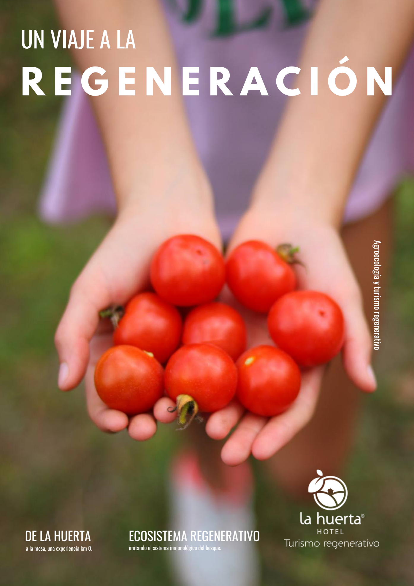

Clase 1 de 3 · Lunes 14 de septiembre
Un viaje a la regeneración.
Por qué tu finca no responde, aunque lo estés haciendo bien.
En vivo · con Iván Castrillón
Empecemos por aquí
Piensa en lo último que compraste para tu casa.
El pan. Las lentejas. El aceite.
01 · El problema
Ahora piensa que tienes una finca.
Y que casi nada de lo que hay en esa bolsa
salió de ella.
La foto grande
Colombia depende de Canadá para poder producir pan y lentejas.
Y Suramérica, una de las regiones que más alimentos exporta del mundo, tiene 34 millones de personas que no logran hacer tres comidas al día.
El País América, 2023.
Treinta segundos y seguimos
Desde dónde te hablo
Registros de producción de La Huerta Hotel.
Piensa en las fincas que conoces
¿Cuántas producen la comida de su propia casa y abastecen un mercado cerca?
Casi ninguna. Tierra fértil por todos lados, y la comida llega en camión desde lejos.
Bloque 2
De lo local a lo global
Esto no es un problema de tu finca. Ni de tu país. Es el mundo entero comiendo así.
Y cuando todos comemos de la misma manera, la cuenta se sobregira. Mira los números.
Esto ya lo viste en una finca
Un potrero repone cien kilos al día. Si metes animales que se comen ciento setenta, al principio no pasa nada.
Un mes después está pelado, y no entiendes en qué momento pasó.
¿Y qué hace el ganadero cuando el pasto se acaba?
Sale a buscar más potrero.
Eso llevamos cien años haciendo como especie. Cuando la tierra ya no repone lo que le sacamos, no la dejamos descansar: tumbamos el monte de al lado.
El potrero nuevo se llama selva
En cien años el mundo perdió tanto bosque como en los nueve mil años anteriores.
Our World in Data (Ritchie, 2021) · FAO, Evaluación de Recursos Forestales (2020) · FAO (2021).
Y aun así no alcanza
No tenemos 1,7 planetas.
Tenemos uno, y lo estamos pastoreando 1,7 veces más rápido de lo que alcanza a rebrotar.
El mismo número, en fechas
Si el sueldo del año se te acaba en julio, los otros cinco meses los vives de los ahorros.
Cada año, el día en que nos gastamos lo que el planeta produce llega antes.
Global Footprint Network · overshoot.footprintnetwork.org, serie histórica recalculada. En 2026 la humanidad usa la naturaleza un 73 % más rápido de lo que los ecosistemas regeneran.
Y el promedio esconde esto
¿Cuántos planetas si todos viviéramos como…?
Global Footprint Network · Naciones Unidas, Departamento de Asuntos Económicos y Sociales. Para 2050, con 9.800 millones de personas y las tendencias actuales, harían falta casi tres planetas.
La foto de nuestra región es distinta
En Latinoamérica, la principal fuente de emisiones no son las fábricas ni los carros. Es cómo usamos la tierra.
Casi el 60 % de nuestras emisiones sale de tumbar selva y de la agricultura. Pastos y monocultivos de exportación: carne, soya, palma y maíz.
El suelo de la región produce commodities para cadenas larguísimas. No comida para la gente que vive sobre él.
Banco Mundial · BID (Dumas et al., 2022) · FAO (2021).
Bloque 3
De dónde salió todo esto
La guerra transformó la agricultura.
La secuencia
De fabricar explosivos a fabricar fertilizante
Castrillón, I. (2026). Un viaje a la regeneración, capítulo 2.
Lo mismo, con otro nombre
La misma fábrica, el mismo químico
Foto: Böll Stiftung · Wikimedia Commons · CC BY-SA 2.0
«Toda la agricultura moderna fue concebida a partir de los restos de la guerra.»
Vandana Shiva
Por eso importa
«Sin fertilizante y sin veneno no se puede.» Te lo dijo el vecino. El agrónomo. El mayordomo. Hasta tu familia.
Pero esa frase no nació en el campo. Nació en una oficina de ventas, hace setenta años. Y de tanto repetirse, se volvió sentido común.
Y esto te lo digo con conocimiento de causa
Yo entrenaba a los que te dicen que sin químicos no se puede. Ese argumento yo lo vendí.
No es una verdad de la naturaleza. Es el discurso comercial de una industria que necesitaba un mercado. Lo sé porque trabajé adentro.
Lo que vino después
Y esto sí está documentado
- Suelos agotados que exigen cada vez más fertilizante para rendir igual.
- Plagas resistentes que obligan a mezclas más tóxicas.
- Ríos y acuíferos con nitratos.
- Agricultores endeudados por el costo de los insumos.
Bloque 4
Y esto qué tiene que ver contigo
La factura llegó a tu casa.
La paradoja de la agricultura sin agricultores
El campo se vació
Y muchos de ustedes están intentando el camino de vuelta. Eso no es un capricho: es bastante sensato.
Lo que comemos
Hace un siglo la diabetes tipo 2, la hipertensión y ciertos cánceres eran raros. Hoy son epidemias.
Organización Panamericana de la Salud (2019). Alimentos y bebidas ultraprocesados en América Latina · Monteiro et al., clasificación NOVA. La ventana del dato va de 2000 a 2013, y conviene decirlo en voz alta.
Bloque 5
Ahora conectemos las dos puntas
Por qué la cuenta del campo nunca da.
Tengas finca, la estés buscando o apenas la estés soñando: la trampa que viste hoy ya está esperándote.
El mismo modelo, por los dos lados
Compras caro y vendes barato
La finca no está fallando. Está atrapada.
Había un pedazo de esa misma finca al que nunca le pasaba nada
¿Qué sabe el bosque que nosotros no sabemos?
Tu regalo de hoy
El libro completo, gratis.
50 páginas. Es el que le damos a quien visita La Huerta. Hoy vieron sus tres primeros capítulos.
Descárgalo en
lahuertalab.com/recursos-extra-page
Y te llega por WhatsApp y correo apenas terminemos.

Mañana, martes 15 · 6:00 p. m.
Renuncié y tuve que empezar de nuevo.
Yo vendía agroquímicos. Me convencí de que se podía sin ellos antes de renunciar. Y aun así, cuando llegué a la finca con mi familia, los cultivos se me arruinaron.
Mañana les cuento qué era lo que me faltaba.